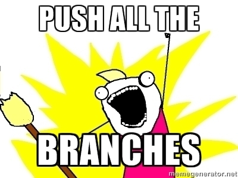

"Oops, I pushed a commit with something sensitive to a public GitHub project!"
So you accidentally pushed a commit with some credentials. Shame on you.
Here's a potential solution:
- Make the GitHub repository private
- Rename the repository, maybe just append "-backup"
- Make a note of the offending commits
- Run
git fetch --all - Create a new GitHub repo with the same name, this will break the automatic aliasing GitHub does when you rename a repo
- Do all kinds of
rebaseand/orfilter-branchlocally to make sure the credentials don't exist at any commit. This might take a while if you have torebasemore than a few commits. - Run git garbage collection:
git gc --aggressive - Make sure none of the offending SHAs exist, you can just
grepinside the.gitdirectory of your local repo. - Run
git push --all -fto push all the branches, assuming you've already fetched them in step 4.

Preventing this in the future
- Tell the person who made the commit the consequences of what just happened.
- More importantly, try to figure out why it happened, maybe they were under a tight deadline and got a bit sloppy - it happens to the best of us.
- Try to store credentials in environment variables, config files that are added to your
.gitignore, or any way you can keep them out of your code.